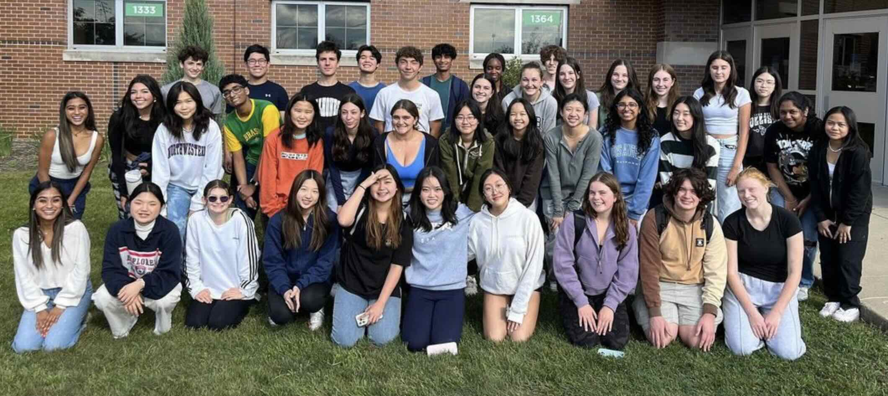
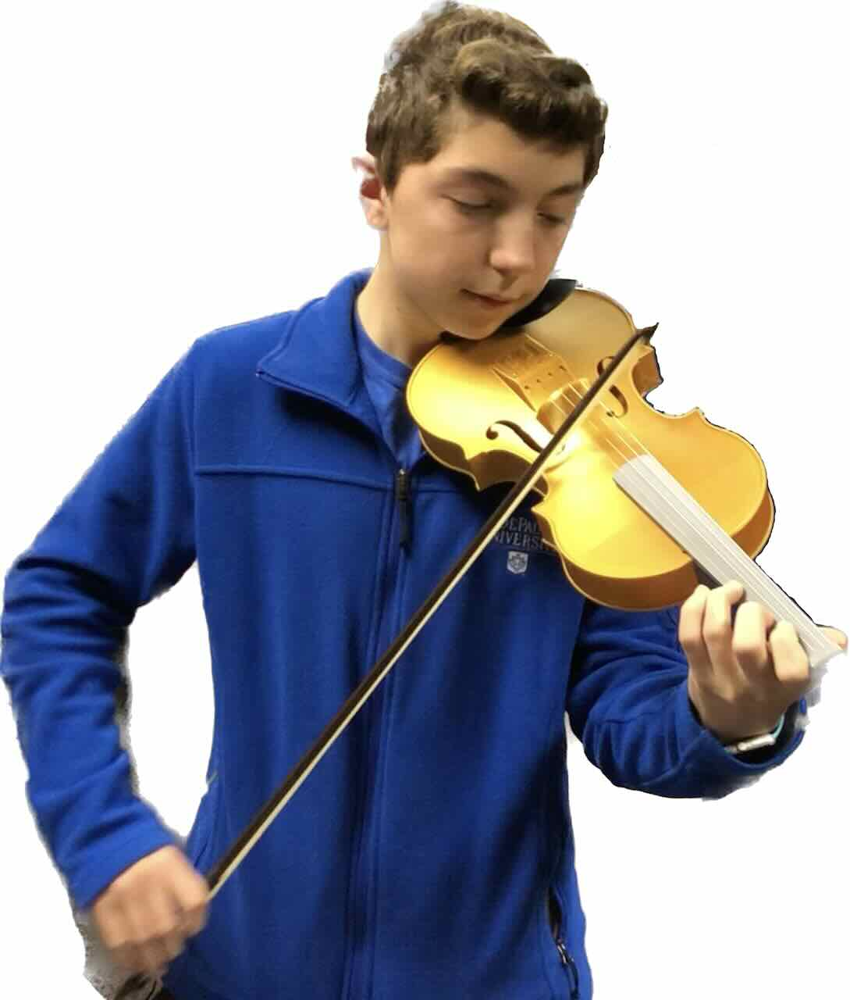
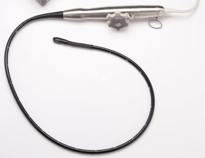

Academics
During my time at Glenbrook South High School, I have taken a rigurous college preparatory curriculum that includes Algebra 2, Precalculus, Advanced Placement (AP) Calculus, Biology, Chemistry, Physics, Computer Science, and Medical Technology. My favorite subjects are math and science, and I plan to pursue a premed undergraduate degree towards my ultimate goal to become a medical doctor. I would like to showcase some of my synergistic activities at GBS: Medical Chapter Club, 3D Printed Violin Engineering Project, Remote Control TEE Probe Prototype Engineering Project, and one of my favorite essays I wrote at GBS on Climate Change.
Medical Chapter Club

In pursuing extracurricular activities to learn more about medicine,
I joined the board of the Medical Chapter Club at GBS where I was responsible
for outreach and coordinating meetings that involved guest speakers from the medical
field. I am the co-president of the GBS Medical Chapter for 2023 - 2024 where I lead the
a group of about 50 like-minded students to learn about the medical field. For more information, please
visit our Instagram page.
3D Printed Violin Engineering Project

The research project explores the innovative design and development of a 3D printed electric violin equipped
with a piezo preamp and active feedback reduction system featuring a noise gate.
Combining additive manufacturing techniques with musical instrument engineering, this study aims to create a low cost, lightweight,
customizable, and acoustically rich electric violin. The integration of a piezo preamp enhances sound pickup and signal quality,
while the active feedback reduction system mitigates unwanted noise and distortion during high-volume performances.
This interdisciplinary endeavor bridges the realms of music, engineering, and manufacturing, offering musicians a novel
instrument that combines cutting-edge technology with artistic expression.
Remote Control TEE Probe Prototype Engineering Project

Victor Marinescu M.D. introduced me to cardiovascular imaging and some of the challenges he faces on a daily basis when he performs routine work,
being exposed to X-ray radiation due to being in close proximity to the patient during surgery. This prompted my involvement in an engineering project
on which I took the lead to assemble a team of high school peers with different areas of knowledge: 3D-printing, embedded computing and electronics, computer programming,
and medical image technologies. This project's goal is to develop a prototype that can control the manipulation of the Transesophageal Echocardiogram (TEE)
probe during surgery from a distance safe from radiation. We are still at the early phases of this project, largely in the literature review stage as well as
prototype development brainstorming. We are working on this project as part of the Capstone Engineering Course under the supervision of
Dr. Marinescu and Michael Sinde (Head of Engineering at GBS). Our ultimate goal is to deliver a functional prototype that will allow the
remote control of the TEE probe, as well as to understand any limitations in its functionality.
Climate Change
Human-induced climate change is a real phenomenon that impacts our planet’s ecosystem resources, species diversity, weather patterns, oceans, etc. However, some argue that climate change is of natural means, not human-induced. Since the Industrial Revolution, an increase in the human population has been observed. With a rapidly growing human population, increased concentrations of greenhouse gases in the atmosphere, and warming oceans, it is clear that climate change is human induced.